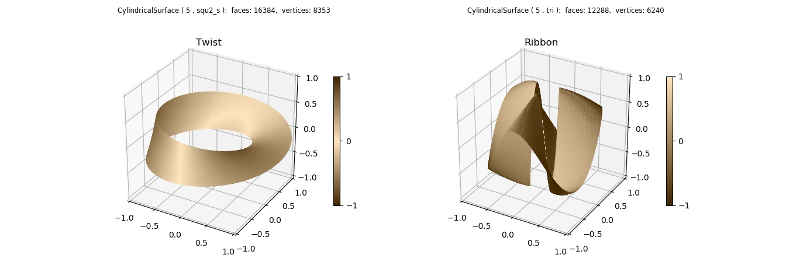
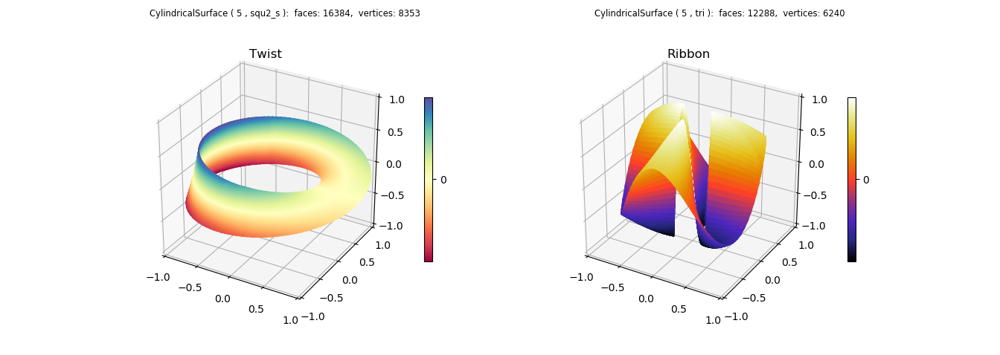
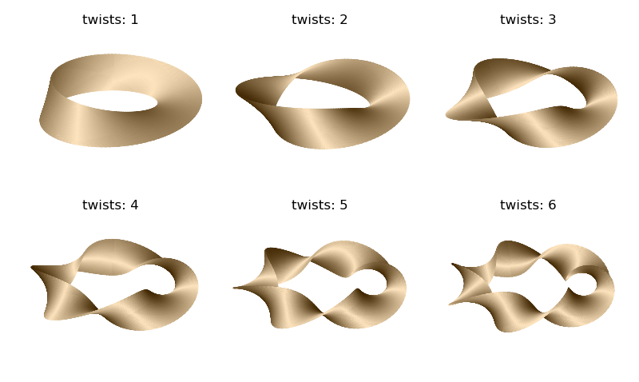

Cylindrical Coordinates¶
Surface Normal Color Mapping¶
Surface geometry is that taken from the Matplotlib More triangular 3D surfaces example.
import numpy as np
from matplotlib import pyplot as plt
from matplotlib.ticker import LinearLocator, FormatStrFormatter
import s3dlib.surface as s3d
import s3dlib.cmap_utilities as cmu
#.. Matplotlib Examples: Cylindrical Coordinates
# 1. Define functions to examine ....................................
def twistFunction(rtz,twists) :
r,t,z = rtz
# Note: sliced surface needed due to discontinuity @ t=0 if twists is odd
thickness = 0.33
w = thickness*z
phi = 0.5*t*twists
R = 1 + w * np.cos(phi)
Z = w * np.sin(phi)
return R,t,Z
def ribbonFunc(rtz) :
r,t,z = rtz
min_radius, max_radius = 0.25, 0.95
d = (max_radius-min_radius)/2
R = d + min_radius + d*z
Z = np.cos(R)*np.sin(3*t)
return R,t,Z
# 2. Setup and map surfaces .........................................
rez = 5
cmu.rgb_cmap_gradient([0.25,0.15,0],[1,.9,.75],'cardboard')
cmu.rgb_cmap_gradient([0.25,0.15,0],[1,.9,.75],'cardboardMrrd',mirrored=True)
twist = s3d.CylindricalSurface(rez, basetype='squ_s')
twist.map_geom_from_op( lambda rtz : twistFunction(rtz,1) )
twist.map_cmap_from_normals(cmap='cardboardMrrd', direction=[1,1,1])
#twist.map_cmap_from_op( lambda xyz : xyz[2] , 'Spectral')
ribbon = s3d.CylindricalSurface(rez, basetype='tri')
ribbon.map_geom_from_op( ribbonFunc )
ribbon.map_cmap_from_normals(cmap='cardboard',direction=[1,1,1])
#ribbon.map_cmap_from_op( lambda xyz : xyz[2] , 'CMRmap')
# 3. Construct figure, add surfaces, and plot ......................
fig = plt.figure(figsize=plt.figaspect(0.5/1.4))
fig.text(0.42,0.975,str(twist), ha='right', va='top', fontsize='smaller', multialignment='right')
fig.text(0.845,0.975,str(ribbon), ha='right', va='top', fontsize='smaller', multialignment='right')
ax1 = fig.add_subplot(121, projection='3d')
ax2 = fig.add_subplot(122, projection='3d')
ax1.set(xlim=(-1,1), ylim=(-1,1), zlim=(-1,1) )
ax2.set(xlim=(-1,1), ylim=(-1,1), zlim=(-1,1) )
ax1.xaxis.set_major_locator(LinearLocator(5))
ax1.yaxis.set_major_locator(LinearLocator(5))
ax1.zaxis.set_major_locator(LinearLocator(5))
ax2.xaxis.set_major_locator(LinearLocator(5))
ax2.yaxis.set_major_locator(LinearLocator(5))
ax2.zaxis.set_major_locator(LinearLocator(5))
ax1.set_title('Twist')
ax2.set_title('Ribbon')
plt.colorbar(twist.cBar_ScalarMappable, ax=ax1, ticks=np.linspace(-1,1,3), shrink=0.6 )
plt.colorbar(ribbon.cBar_ScalarMappable, ax=ax2, ticks=np.linspace(-1,1,3), shrink=0.6 )
ax1.add_collection3d(twist)
ax2.add_collection3d(ribbon)
#fig.tight_layout()
plt.show()
Note
A sliced cylindrical surface, basetype=’squ_s’, was used for the twist surface because the surface twists and joins together at θ = 0 amd 2π. Also, for this reason, the mirrored color map is applied since the normals at these two locations are in opposite directions. As noted in the code comments, this condition applies for cases when the parameter ‘twists’ is odd. A further description of mirrored colormap usage is given in the Cyclic and Mirrored Colormaps example.
Color Mapping in the Z direction¶
The referenced Matplotlib example uses a cmap applied to the vertical location of the surface. This can also be easily constructed by uncommenting the highlighted lines to apply a surface cmap. A simple lambda function can be used instead of defining a separate functional operation since the surface geometry is already applied. The resulting plot is shown below. When this is done, the shade operation is no longer needed (but can be applied after the mapping operation to highlight the surface geometry)
Parametric Surfaces¶
The twist surface was constructed using an additional parameter in the geometry mapping function. Multiple surfaces, varying with the ‘twists’ parameter are shown below:
Surface normal color mapping is particularly useful for complex shaped surfaces. The comprehension of the higher twist surfaces is more difficult using a z color mapping. Using same twist function, steps 2 and 3 were replaced by the following code to produce the above figure.
# 2 & 3. Setup surfaces and plot ....................................
rez = 5
cmu.rgb_cmap_gradient([0.25,0.15,0],[1,.9,.75],'cardboardMrrd',mirrored=True)
fig = plt.figure(figsize=plt.figaspect(0.6))
for i in range(1,7) :
ax = fig.add_subplot(2,3,i, projection='3d')
ax.set(xlim=(-0.8,0.8), ylim=(-0.8,0.8), zlim=(-0.8,0.8) )
twist = s3d.CylindricalSurface(rez, basetype='squ_s')
twist.map_geom_from_op( lambda rtz : twistFunction(rtz,i) )
twist.map_cmap_from_normals(cmap='cardboardMrrd', direction=[1,1,1])
ax.set_title('twists: '+str(i))
ax.add_collection3d(twist)
ax.set_axis_off()
fig.tight_layout()
plt.show()